樱花社社史
历久弥新 · 记录科高樱花社的点点滴滴
社团初创，初具规模
樱花社于 2013 年（创校第二年）建立。目前已知最早的社团资料，是“Nuage 雲”用户（科高 12 级首批学生）于 2013-09-22 在深圳科高樱花社吧发布的 《【求教】关于对樱花社的建议哟》帖子。
此时社团设立三个部门：绘画部、策划部、cos 部。每周各部门一次课，也可跨部门旁听，活动围绕部门主题开展。
首任社长为贴吧用户“沐七 NANA”，Xx、Berserk Miyuki 任社长助理，兰 o 科任 cos 部部长，紫色倒皇冠任绘画部部长。
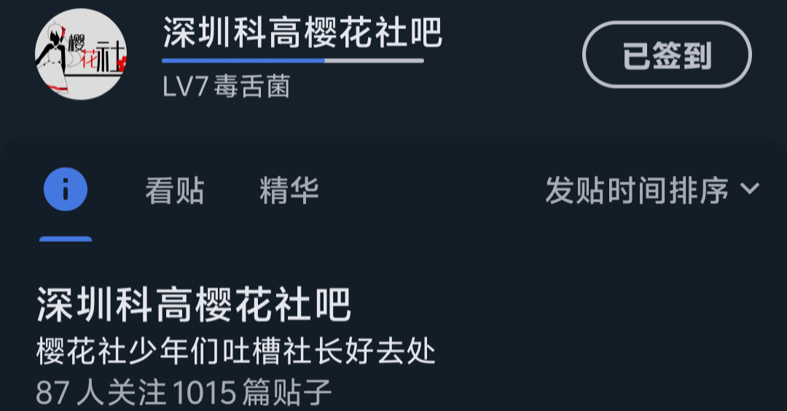
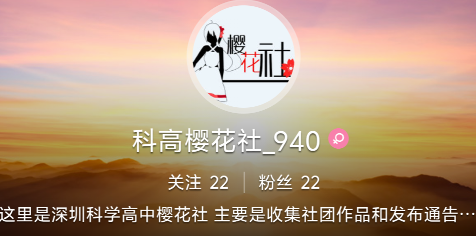
初版社拟由绘画部部长紫色倒皇冠创作。初版社徽（另一版）作者不明。
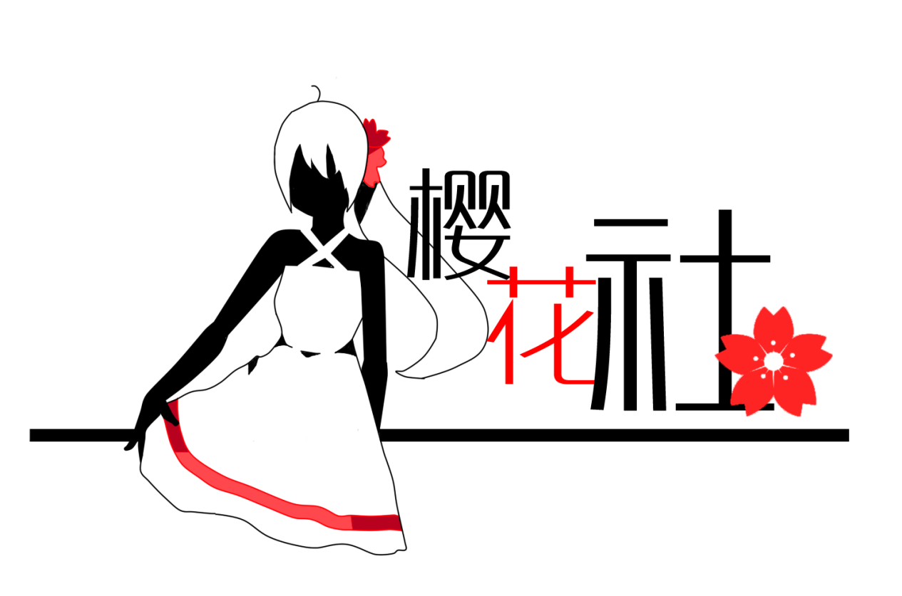
确定社徽，招新口号出炉
14 年 8 月，正式确定由“猫君”设计的社徽，持续沿用至今，成为社团最具标志性的一张图。“一定要传下去啊！”
时任社长为贴吧用户“七染风”。同年 招新说明中写道：“找绅士，找秀吉，到科高樱花社！国家优质机构，实行国家 3 个 1 政策，是你值得信赖的不二之选！”
此时樱花社位于国际体系一楼的日本文化体验教室，拥有日式活动室（有榻榻米）作为社团活动地点。另附 14 年广州 YACA 漫展社长游玩记录。
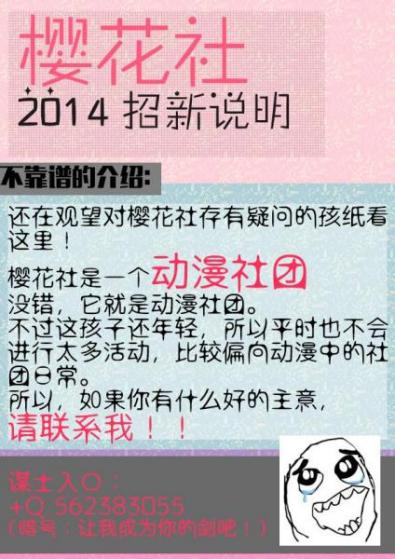
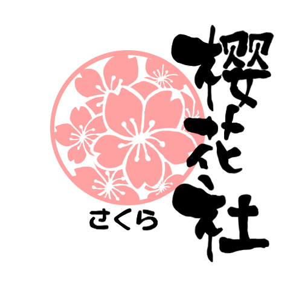
13 或 14 年（不确定）社团成员合影，图中间白衣为社团指导老师李银华。

资料缺失
这一年的资料暂未找到，等待补充。
重新出发，展望未来
时任社长为“扣子（澄）”。当年的 招新贴中回顾了樱花社四年的跌跌撞撞，将其比作“需要关怀的可爱小宝宝”，并号召大家加入 QQ 群（552536279）一起建设社团。
“樱花社其实就是一个家，是一个我们可以在学习之余也能放松身心，做自己热爱的事情的地方。”
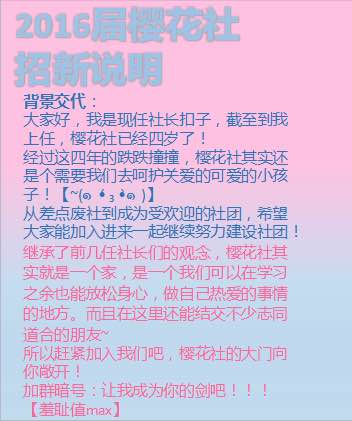
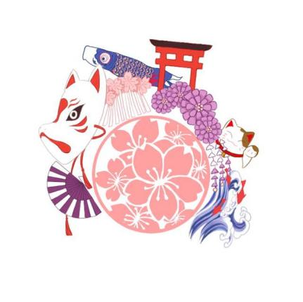
活动室拆除，精彩展演
暑假期间，伴随社团多年的日式榻榻米活动室被拆除（默哀 10 秒）。
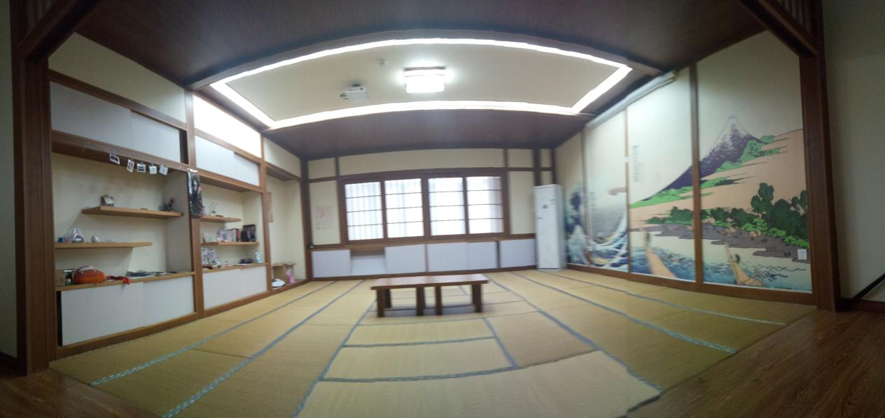
尽管如此，社团依然活跃。在当年的 社团招新贴与社团展演上，樱花社带来了“极乐净土”宅舞表演。 视频(08:47处)：BV1Rx411v7wt
百花齐放与尝试合作
学校涌现出 ACG 视频录制社（有称哔哩哔哩社）、阿瓦隆史学社（TRPG、塔罗占卜、周易神秘学等）、ACG 社（有电脑房作为活动室，常出 cos，平时活动有做视频、看番等）等竞品/同类社团。阿瓦隆与 ACG 两社大致结盟，共活动室、活动一同策划。
樱花社发起 ACG 社团合作组团，与上述三社及时樱中文配音社一起组织活动，社团身份可互通，但最终被叫停（悲）。上述三社也受多重因素影响，在发展中逐渐衰微最终消失。
衰落与重生
20-21 届末新任社长猫猫与其伙伴们继任时，整个社团就只剩四个人（最后一节社团课只有四人来上课）。社长猫猫根据另外三人的特长划分职责，成立精灵、法师、骑士三大部门，奠定了往后社团的运行模式。
社长猫猫与法师部部长创作社拟，在理山书屋上架了社原创同人制品，大爆。随后很多其他社团涌现，也开始做周边售卖。
同年社团展演带来“寄明月”宅舞表演。视频(34:07处)：BV1w64y1B7mz
至暗时刻与艰难前行
罗诚上台后，社团发展受阻，进入樱花社至暗时刻。24 年起社团无法自己选择社员，部门发展停滞。25 年随车力巨人事件后校方对 ACG 文化严加打击，运动会全面禁止 cos，出现 SL 事件（阿萨拉火箭兵事件）。
25-26 学年出现除百团大战外 0 活动的空前窘境。
游园会大赚一笔
在 5 月的游园会上，樱花社摊位大放异彩，现场售卖周边与零食，最终社团存款大大增加（感谢学长馈赠）！
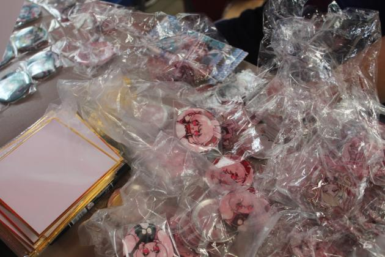
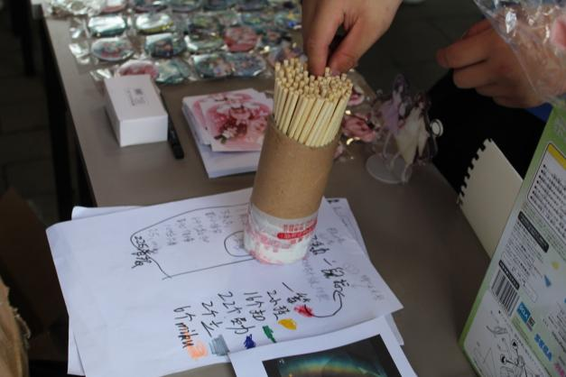
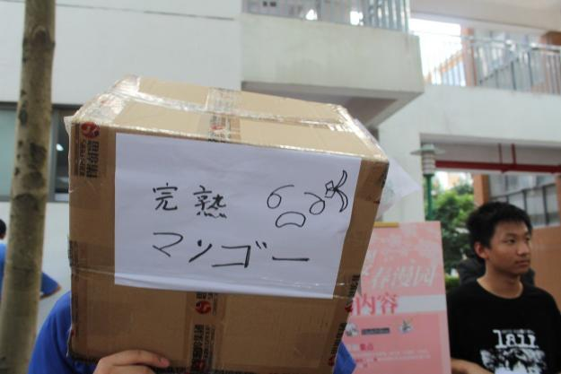
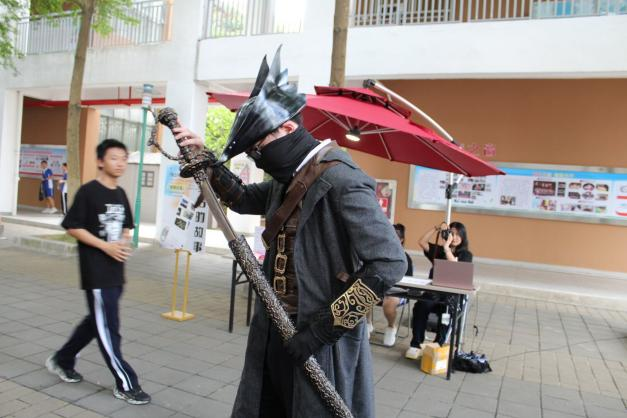
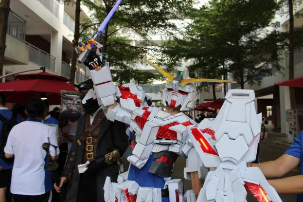
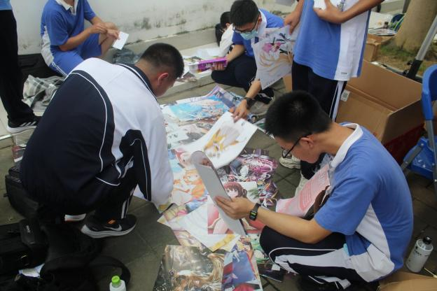
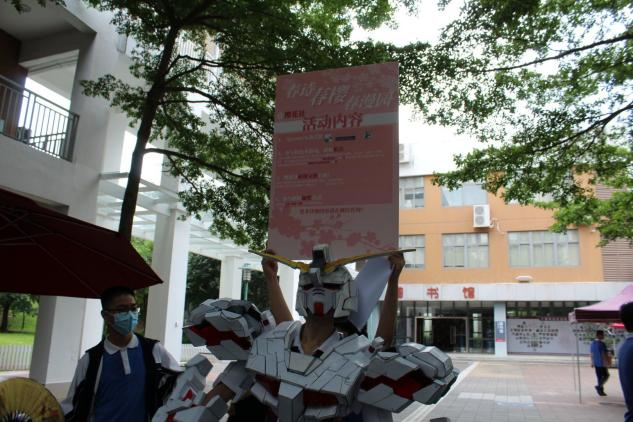
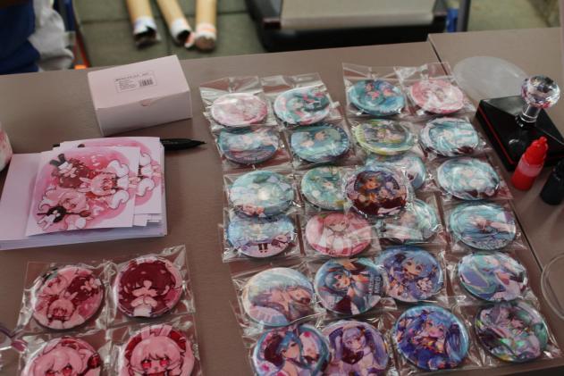
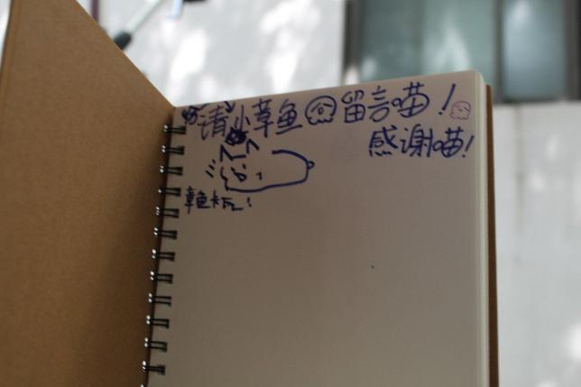
点击图片可查看大图 · 原图及其他照片见樱花社社群
新篇开启
樱花社仍在继续前行，欢迎所有热爱 ACGN 的同学加入。
社团当前使用的社徽，仍是 2014 年“猫君”创作的那一版。
历届指导老师
正在加载名录...
历届社长与干部（部分）
正在加载名录...